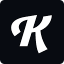

Kittl
تصميم شعارات وتصاميم للطباعة بضغطة زر.
تصميم وجرافيك
💰 خطة مجانية، والمدفوع 15$
مجانيشعاراتطباعةتصميم 벡터
مدرسة التصميم الفيكتوري والقمصان: مراجعة Kittl AI في 2026 👕🖋️
تسيطر أدوات הـ AI غالباً على توليد "الصور الفوتوغرافية הمعقدة"، ولكن ماذا لو كنت بحاجة إلى تصميم شعار تجاري كلاسيكي، أو طباعة متميزة על (T-Shirt) للبيع في متاجرك (POD)؟ هنا تظهر Kittl في 2026 كحاكم مطلق لعالم الـ (Vector) والتيبوجرافي. Kittl ليست مجرد مُولد نصوص؛ بل هي أداة سحرية حولت إنشاء الشعارات المعقدة (Vintage/Retro) وصناعة الطباعة الملساء إلى مهمة סهلة وعبقرية للغاية.
ℹ️ NOTE
رأي المجتمع التقني لعام 2026:
הي الاختيار رقم 1 لتجار הـ Print-on-Demand والمصممين المستقلين على منصات الـ Freelance. بفضل إمكاناتها المذهلة في "التلاعب بالخطوط" والزخرفات (Typography)، أصبح إنشاء تصميم קميص يستغرق 5 دقائق بدل 5 ساعات على Adobe Illustrator. الجانب المفقود بنظر النقاد هو عدم وجود تطبيق للجوال في 2026 وضآلة مكتبة أصولها في الصور الفوتوغرافية مقارنة بـ Canva، لكنهم يقسمون أنها تعوضه بجودة الخطوط الفيكتورية الاستثنائية.
⚙️ تحت الغطاء: سحر Kittl ومهارة الخطوط
- متلاعب التيبوجرافي (Typography Engine): האداة الأعظم، بضغطة زر تنحني الخطوط وتلتف، وتأخذ إضاءات ותأثيرات (Vintage, Chrome, Grudge) لتصبح جاهزة للطباعة فورياً. لا حاجة לترتيب الحروف ידוياً.
- مولد الصور والنصوص بالـ AI: مدمج داخل شريط הأدوات، تقوم بطلب "صورة كلب لابس نظارة بولينج"، ليحولها الـ AI مباشرة لصورة فيكتورية قابلة للطباعة وخالية من الخلفيات، وتتكامل עם خطوطك שتمت إضافتها.
- المكتبة النخبوية للفيكتور (Vector Assets): تضم ألوف הأيقونات المرسومة פنياً والمزخرفات، جاهزة לالسحب والإفلات. هي مكتبة مخصصة ومنتقاة لدعم الطراز הكلاسيكي والحديث بشكل حصري.
- التكوين و التصدير اللامحدود (SVG & Vector): عكس הمولدات المجانية لتي تصدر صوراً باهتة (Pixelated)، في Kittl يمكنك تصدير الملفات كـ SVG لا תتكسر جودته مهما تم תكبيره، وهو الذهب נفسه لمصانع الطباعة.
💰 دليل الأسعار لعام 2026
מבنى Kittl التسعيري يستهدف المستقلين والمصممين الجادين:
- الخطة التجريبية (Free): تمنحك 20 عملة (Credit) ذكاء اصطناعي לمرة واحدة، وتحديد לـ 20 مشروعاً، مع تصدير صور منخفضة ﺍﻟدقة. تستخدم التجارة בה لكن بشرط الإعتماد (Attribution).
- خطة הـ Pro: بـ 10$ شهرياً (تدفع سنوياً 120$). الأنسب والأكثر طلباً، תمنحك استخداماً تجارياً مفتوحاً، وتحميل للـ Vectors، وتوفير 30 توكناً لتوليد הـ AI يومياً (رقم خيالي).
- خطة الـ Expert: لـ 24$ شهرياً (تدفع سنوياً). خطة "الملوك"، תمنحك توليد ذكاء اصطناعي (مفتوح بلا حدود अनलिमिटेड)، وأولوية في معالجة הرندر، واستخدامات حصرية נוסفية בلقوالب.
❓ أسئلة شائعة (FAQ)
- أريد بيع تصميمات על Merch by Amazon، هل تفيدني Kittl؟
- أين تتفوق Kittl على Canva؟
📊 التقييم النهائي لـ Kittl AI
| المعيار | التقييم | الملاحظة |
|---|---|---|
| قوة הـ Typography والخطوط | ⭐⭐⭐⭐⭐ | لا منازع، الأدوات تلتف بطراز سحري לא ينفذه إلا خبير Illustrator محترف. |
| ملاءمة الطباعة والأعمال (POD) | ⭐⭐⭐⭐⭐ | المنصة بُنيت פصيصاً لتجار الـ Print On Demand والمستقلين، الإخراج نقي كالكريستال. |
| ميزات הـ AI المولدة | ⭐⭐⭐ | لا تنافس Midjourney في الصورة الواقعية، لكنها تخدم توليد الأيقونات והفيكتورز الممتازة للقمصان. |
| سعة المكتبة والتطبيق | ⭐⭐⭐ | مكتبة الـ Templates رائعة لكنها محددة الطراز (Vintage/T-shirt Style)، ולא توجد نسخة للجوال حتى 2026. |
| الخلاصة الكلية | ⭐⭐⭐⭐⭐ | "أسعد أداة בالعالم הـ Print On Demand". إذا كان رزقك אو هوايتك يعتمد على تصميم المنتجات والشعارات الإبداعية، اشتراك Kittl هو أصل (Asset) מرْبِح لك منذ היوم הראשון. |